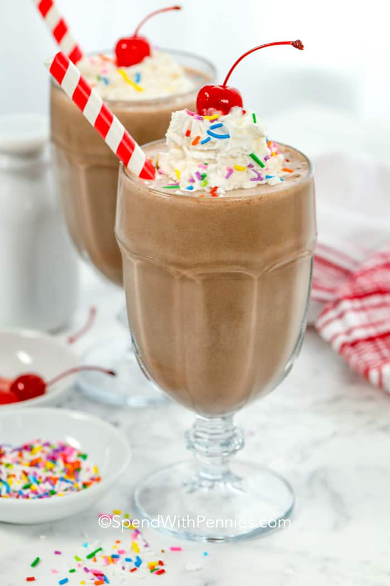

Chocolate Milkshake

Description
Making a milkshake is honestly as simple as blending 3 ingredients!
The best ice cream is to use is full cream, full-fat ice cream because
that's where the flavor is! It is thicker, richer, and holds up better in
the blender and when mixed with other ingredients because it has more air whipped into it.
To make a milkshake without a blender, you can simply add the ingredients to a bowl and mix
until smooth. This takes a bit longer but still tastes great!
Ingredients
- A generous portion of ice cream
- A splash of milk
- Flavoring
Toppings:
- Cookies: Crushed cookie crumbs (oreos, nutter butters, chocolate chip)
- Sauces: Caramel, strawberry, blueberry, hot fudge, pineapple, peanut butter
- Nuts: toasted peanuts, slivered almonds, crushed pecans
- Fruit: strawberries, blueberries, cherries, bananas
- Candies: gummies, sprinkles, licorice whips, nonpareils, skittles, chocolate chips, peanut butter chips, crushed peppermint candies.
Steps
- Ready up your blender (if you have one!)
- Pour all of your liquid ingredients into a blender
- Add your whole ingredients
- Turn on your blender on medium power for approx. 1 minute
- Serve your shake in big, glass cup
- Sprinkle the milkshake with your favorite toppings
- Drink up!
Go to top Main page